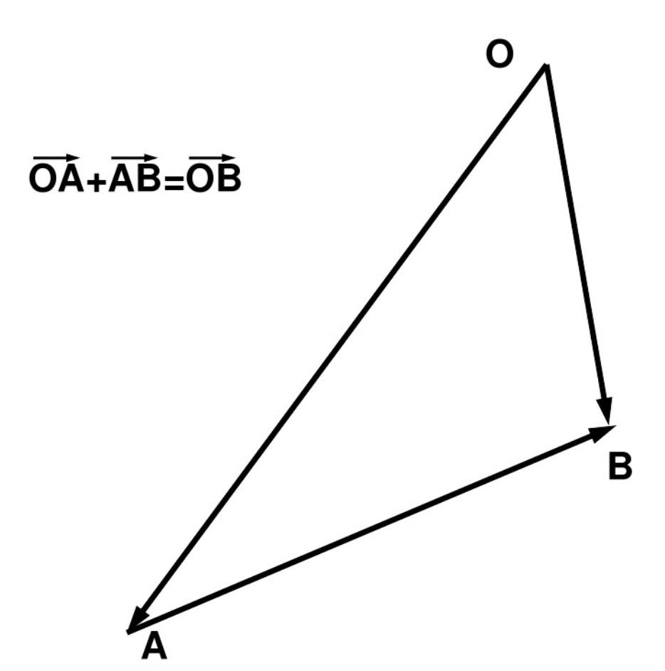
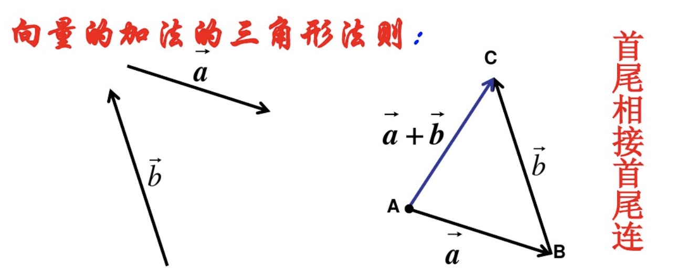
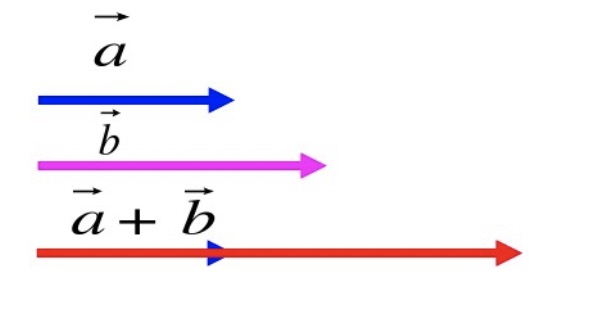
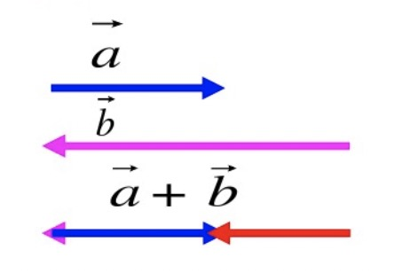
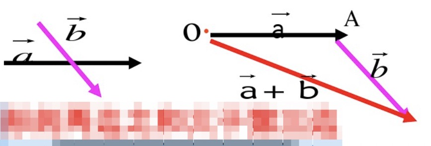
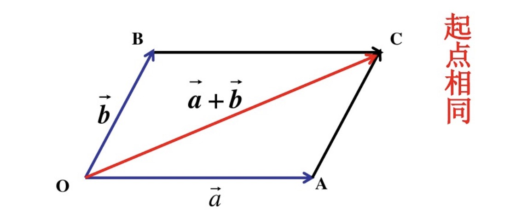
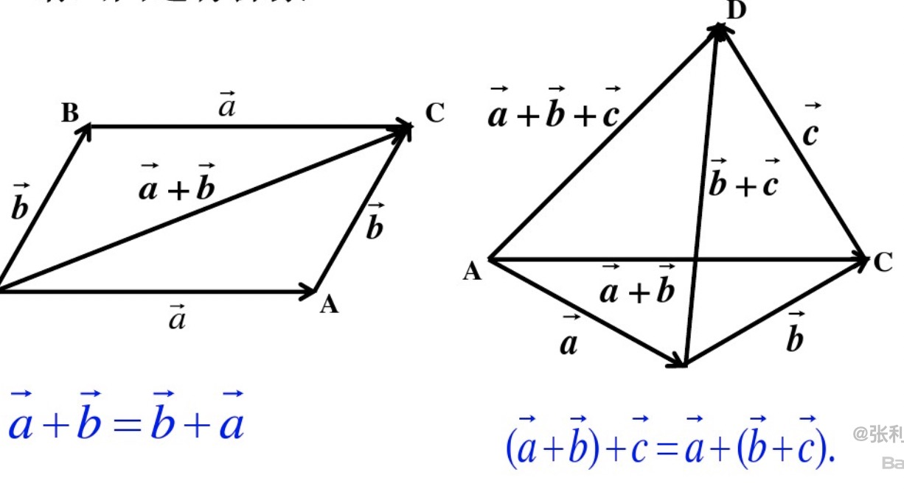
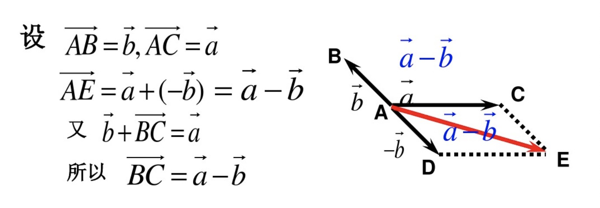

向量
概念
既有大小，又有方向的量。向量一般用: $\vec a \quad \vec b \quad \vec c$来表示；或用有向线段的起点和终点的大写字母来表示，如：$\vec{AB}$
向量的模 向量的大小即向量的模（长度），记作:$|\vec{AB}|$
单位向量 模为1个单位长度的向量。
平行向量（共线向量） 方向相同或者相反的非零向量。任意一组平行向量都可以移动到同一个直线上。
相反向量 我们把与向量$\vec a$长度相等，方向相反的向量，叫做$\vec a$的相反向量。 记作：$-\vec a$
相等向量 长度相等且方向相同的向量。相等向量经过平移后总可以重合，即为$\vec a = \vec b$
加法

求两个向量$\vec a,\vec b$的和的运算，叫做向量的加法。 $\vec a + \vec b$叫做$\vec a,\vec b$的和向量。
两个向量的和任然是一个向量
三角形法则

已知非零向量$\vec a,\vec b$,在平面内任取一点A，做$\vec{AB} = \vec{a},\vec{BC} = \vec{b}$,则向量$\vec{AC}$叫做$\vec a$与$\vec b$的和，记作$\vec a + \vec b$即：
$$ \vec a + \vec b = \vec{AB} + \vec{BC} = \vec {AC} $$ 这种求和方法，称为向量加法的三角形法则
$|\vec a + \vec b|$与$|\vec a| + |\vec b| $的大小
共线
| 同向： | 反向 |
|---|---|
|  $$ | \vec a + \vec b | = |\vec a| + |\vec b| $$ |  $$ | \vec a + \vec b | = |\vec b| - |\vec a| $$ |
不共线

三角形的两边和大于第三边综上得出结论：
$$ |\vec a + \vec b| \leq |\vec a| + |\vec b| $$
平行四边形法则

以同一起点的两个已知向量$\vec a,\vec b$为领边作四边形OACB,则以O为起点的对角线$\vec {OC}$就是$\vec a$与$\vec b$ 的和$\vec a+\vec b$，即
$$ \vec a + \vec b = \vec{OA} + \vec{OB} = \vec{OC} $$ 这种求向量和的方法，称为向量加法的平行四边形法则。
以同一起点的两个向量为领边作平行四边形，则以公共起点为起点的对角线所对应向量就是和向量向量的加法满足交换律和结合律

$$ \vec a + \vec b = \vec b + \vec a \\ (\vec a + \vec b ) + \vec c = \vec a + (\vec b + \vec c) $$
减法
相反向量
与$\vec a$长度相等，方向相反的向量，叫做$\vec a$的相反向量。记作$-\vec a$
$$ - (-\vec a ) = \vec a \\ \vec a + ( - \vec a) = (-\vec a) + \vec a = 0 $$
向量$\vec a$加上$\vec b$的相反向量叫做$\vec a$与$\vec b$的差，记作：
$$ \vec a - \vec b = \vec a + (-\vec b) $$
求两个向量差的运算，叫做向量的减法

几何意义
$\vec a - \vec b$可以表示为从向量$\vec b$的终点指向向量$\vec a$的终点向量
注意：
- 起点必须相同
- 指向被减向量的终点
实数与向量的乘积
实数$\lambda$ 与向量$\vec a$的乘积为一个向量，记作$\lambda \vec a$
规定如下：
$$|\lambda\vec a| = |\lambda|\times|\vec a| $$
当$\lambda > 0$时，$\lambda \vec a$的方向与$\vec a$的方向相同；当$\lambda < 0$时，$\lambda \vec a$的方向与$\vec a$的方向相反；当$\lambda = 0$时，方向是任意的。
满足交换律、结合律和分配律
设$\lambda,\mu$为实数，则
$$ \lambda (\mu \vec a) = (\lambda \mu) \vec a \\ (\lambda + \mu) \vec a = \lambda \vec a + \mu \vec a \\ \lambda (\vec a + \vec b) = \lambda \vec a + \lambda \vec b $$
共线定理
向量$\vec b$与非零向量$\vec a$共线，有且只有一个实数$\lambda$ 使得$\vec b = \lambda \vec a$
平面向量的基本定义
如果$\vec{e1},\vec{e2}$是一个平面内的两个不共线的向量。那么对这一平面内的任意向量$\vec a$,有且只有一对实数$\lambda1,\lambda2$，使得： $$\vec a = \lambda1 \vec{e1} + \lambda2 \vec{e2}$$ 其中不共线的向量$\vec{e1},\vec{e2}$叫做表示这一平面内所有向量的一组基底
参考网站：
https://wenku.baidu.com/view/7ee1870d336c1eb91a375de4.html https://wenku.baidu.com/view/fd6011d87f1922791688e878.html